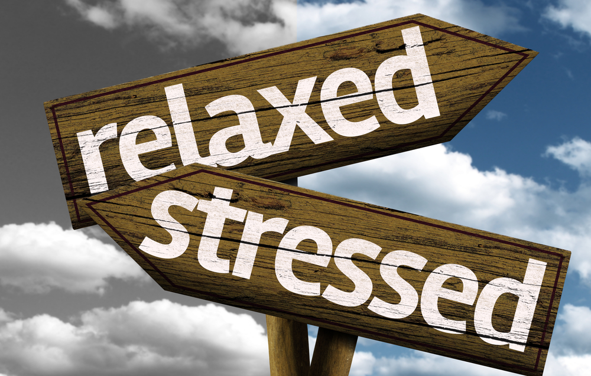

Ways to deal with stress
-
Meditaion:
Meditating helps calm you so whenever you feel stresed out you can do a bit of meditaion to help calm yourself.
-
Breaks:
Giving your self breaks when you feel stressed out can be very helpfull. For example if you need to comeplete an essay but you don't know what to do just take a break and clear your mind.
-
Yoga:
Yoga is also a great way to take your mind off things and if you just do a few minutes a day you can do much more things because you will pay more attention to what your doing and won't get distracted as much which if you have an assingment due you won't stress for turning it late or having nothing done when it's close due.
-
Make time for yourself
Which is different from taking a break, a break is something short you do on the spot but making time for yourself is when you stop doing what you are doing and do something you love for a long time like hanging out with friends going to visit family stuff like that.
